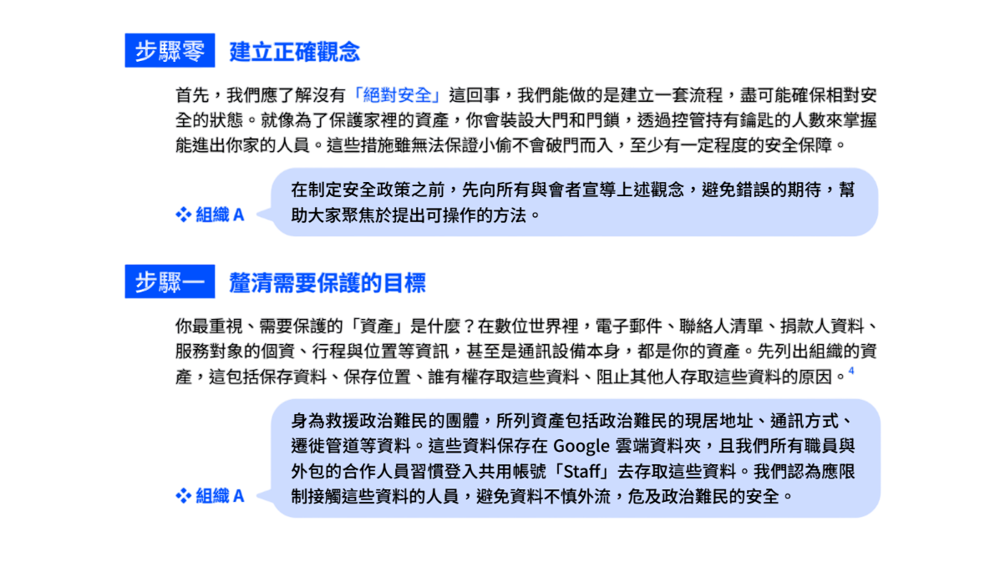
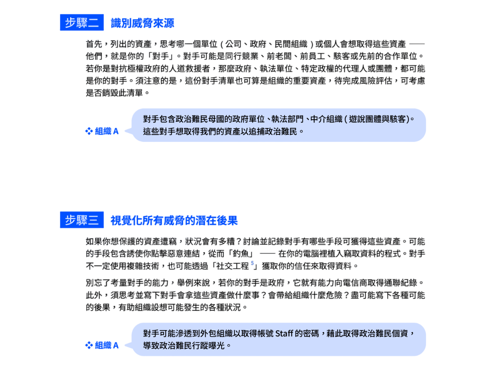

前言
-
科技工具普及，為公民團體帶來嶄新的工作方式——倡議，可透過更便利的自媒體平台；募款，有更多元的金流串接方式接觸支持者；執行第一線工作、與他人合作或提供服務給目標群眾，可透過線上會議或虛實整合的方式。與此同時，隨數位化而來的風險，我們必須正視並為此制定管理政策。
從社群媒體、雲端裡的工作檔案到捐款人資料，我們在數位世界的每一步都留下數位足跡。就像貓咪如廁完會撥砂掩蓋氣味，以免被敵人追蹤，公民團體也需要了解如何在數位叢林中保護自己。
自我保護的第一步，是辨識要保護的資產，才能分析潛在危險以及擬定相應的風險管理機制，這就是「威脅建模」（Threat modeling）的概念。以下將解析威脅建模的六大步驟，並以假想的組織 A 為例，幫助大家理解如何為組織評估風險、建立安全政策。




為了讓這趟學習之旅更有效率，我們將各種情境拆解成下列題目，邀請你點入前測問卷，記錄你的行動與選擇。請按照你的習慣作答，這有助於你了解自己應該加強後續哪個面向的數位安全。
如果對本文的介紹有任何疑義，也可以聯繫 hi@ocf.tw 開放文化基金會。